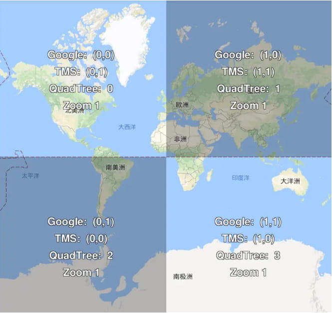
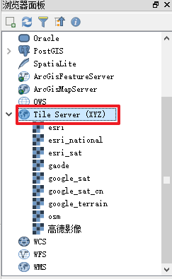
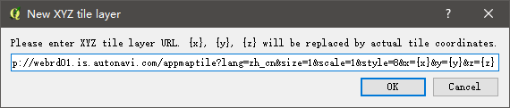
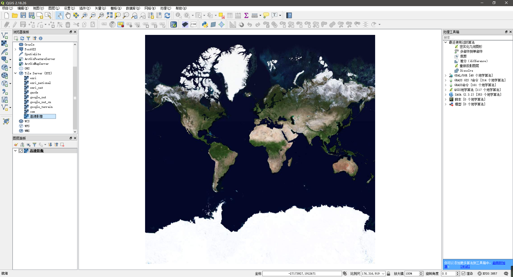

瓦片地图与TMS服务
瓦片切片方式
切片的规则存在 TMS、Google Maps、百度和 QuadTree 的方式，TMS 定义切片的开始从地图左下角开始，即中心点（origin）在左下角，Google Maps 的切片定义中心点在左上角，QuadTree 是必应地图使用的一种切片命名格式，TMS 和 Google Maps 是将地图以 x/y/z 的方式存储读取，QuadTree 将 x/y 转换成二进制的形式，进行存储读取，原理是一样的，只是命名规则不同。
瓦片编号
瓦片生成后，就是一堆图片。怎么对这堆图片进行编号，是目前主流互联网地图商分歧最大的地方。总结起来分为四个流派：
- 谷歌 XYZ：Z 表示缩放层级，Z=zoom；XY 的原点在左上角，X 从左向右，Y 从上向下，ArcServer 和高德地图切片规则和谷歌地图一致，WTMS 是 OGC（OGC-WTMS）的标准也和这个一样。
- TMS（OSGeo-TMS 标准）：开源产品的标准，Z 的定义与谷歌相同；XY 的原点在左下角，X 从左向右，Y 从下向上。
- 百度 XYZ：Z 从 1 开始，在最高级就把地图分为四块瓦片；XY 的原点在经度为 0 纬度位 0 的位置，X 从左向右，Y 从下向上。
- 必应地图的 QuadTree

QGIS 配置
QGIS 版本需要大于等于 2.16
浏览器面板

新建连接
右键 -> 新建连接 -> 复制下面常用的 TMS_URL

加载底图
添加图层至图层面板

常用的 TMS_URL
- 2gis_map:
http://tile2.maps.2gis.com/tiles?x={x}&y={y}&z={z}&v=1.1 - Bingmap:
http://ecn.dynamic.t0.tiles.virtualearth.net/comp/CompositionHandler/{q}?mkt=en-us&it=G,VE,BX,L,LA&shading=hill - Bing_sat:
http://ecn.t3.tiles.virtualearth.net/tiles/a{q}.jpeg?g=0&dir=dir_n - cartdb_positron:
http://a.basemaps.cartocdn.com/light_all/{z}/{x}/{y}.png - ESRI_national_geographic:
http://services.arcgisonline.com/ArcGIS/rest/services/NatGeo_World_Map/MapServer/tile/{z}/{y}/{x} - ESRI_sat:
https://server.arcgisonline.com/ArcGIS/rest/services/World_Imagery/MapServer/tile/{z}/{y}/{x} - ESRI_standard:
https://server.arcgisonline.com/ArcGIS/rest/services/World_Street_Map/MapServer/tile/{z}/{y}/{x} - google_CN:
http://mt2.google.cn/vt/lyrs=m@177000000&hl=zh-CN&gl=cn&src=app&x={x}&y={y}&z={z} - google_road:
https://mt1.google.com/vt/lyrs=m&x={x}&y={y}&z={z} - google_sat_us:
https://mt1.google.com/vt/lyrs=s@110&x={x}&y={y}&z={z} - google_sat:
http://mt3.google.cn/vt/lyrs=s@110&hl=zh-CN&gl=cn&src=app&x={x}&y={y}&z={z} - landsat:
http://irs.gis-lab.info/?layers=landsat&request=GetTile&z={z}&x={x}&y={y} - OSM:
http://c.tile.openstreetmap.org/{z}/{x}/{y}.png - google_terrain:
http://mt0.google.com/vt/lyrs=t@130,r@203000000&hl=en&x={x}&y={y}&z={z}&s=Ga - 高德地图:
http://webrd01.is.autonavi.com/appmaptile?lang=zh_cn&size=1&scale=1&style=8&x={x}&y={y}&z={z} - 高德卫星:
http://webst04.is.autonavi.com/appmaptile?style=6&x={x}&y={y}&z={z} - 腾讯地图:
http://rt1.map.gtimg.com/realtimerender?z={z}&x={x}&y={y}&type=vector&style=0 - geoq:
http://map.geoq.cn/ArcGIS/rest/services/ChinaOnlineStreetWarm/MapServer/tile/{z}/{y}/{x}
谷歌地址配置说明
http://mt0.google.com/vt/lyrs=m&hl=en&x={x}&y={y}&z={z}&s=Ga
1 | h = roads only |